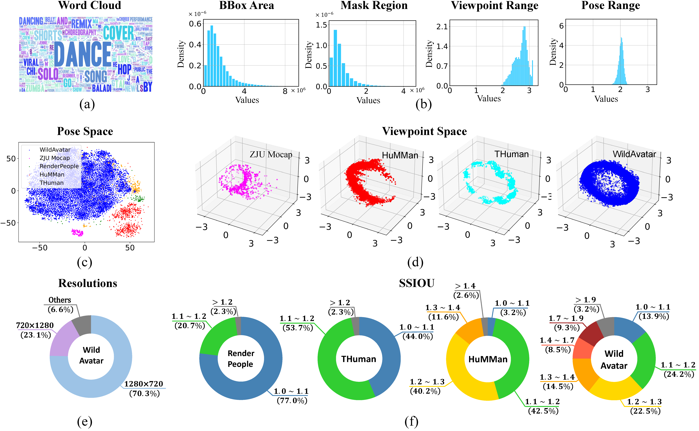

TL;DR
WildAvatar is a large-scale dataset from YouTube with 10,000+ human subjects, designed to address the limitations of existing laboratory datasets for avatar creation.
Demo Video
Abstract
Existing human datasets for avatar creation are typically limited to laboratory environments, wherein high-quality annotations (e.g., SMPL estimation from 3D scans or multi-view images) can be ideally provided. However, their annotating requirements are impractical for real-world images or videos, posing challenges toward real-world applications on current avatar creation methods.
To this end, we propose the WildAvatar dataset, a web-scale in-the-wild human avatar creation dataset extracted from YouTube, with 10,000+ different human subjects and scenes. WildAvatar is at least 10x richer than previous datasets for 3D human avatar creation.
We evaluate several state-of-the-art avatar creation methods on our dataset, highlighting the unexplored challenges in real-world applications on avatar creation. We also demonstrate the potential for generalizability of avatar creation methods, when provided with data at scale. We will publicly release our data source links and annotations, to push forward 3D human avatar creation and other related fields for real-world applications.
SMPL Visualizations
Pipeline Overview
The four-stage data processing pipeline. We first obtain the bounding box of key subjects in videos in Stage I and extract human segmentation masks in Stage II. Then the SMPL and camera parameters are coarsely estimated in Stage III and later refined in Stage IV.
Data Analysis

(a) word cloud of the video titles in WildAvatar, (b) histograms of annotations across video clips, here we count the bounding box and human mask region in pixels, and "Range" denotes the difference between the maximum and minimum values. (c) comparison of the body pose spaces with popular laboratory human datasets, (d) comparison of the viewpoints spaces with popular laboratory human datasets, (e) resolutions of videos in WildAvatar, and (f) comparison with the previous dataset on the abundance of clothing. We introduce the SSIOU, the inverse IOU between SMPL masks and segmentation masks.
Qualitative Comparisons
Qualitative comparisons of popular per-subject methods on WildAvatar. NHP and NB, AN, AS, HN, IN, and GH denote Neural Human Rendering, NeuralBody, Animatable NeRF, Animatable SDF, HumanNeRF, InstantNVR, and GauHuman, respectively. Faces are blurred to protect privacy.
Qualitative comparisons on the state-of-the-art generalizable avatar creation method (SHERF). ``w/ WA'' or ``w/o WA'' denotes training with or without WildAvatar, respectively. Faces are blurred to protect privacy.
BibTeX
@article{huang2024wildavatar,
title={WildAvatar: Web-scale In-the-wild Video Dataset for 3D Avatar Creation},
author={Huang, Zihao and Hu, ShouKang and Wang, Guangcong and Liu, Tianqi and Zang, Yuhang and Cao, Zhiguo and Li, Wei and Liu, Ziwei},
journal={arXiv preprint arXiv:2407.02165},
year={2024}
}